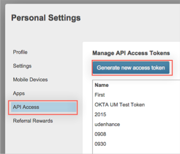
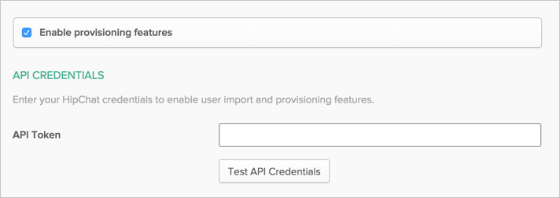
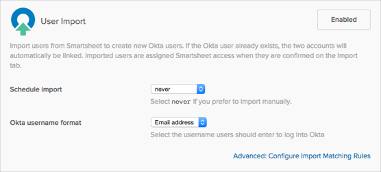
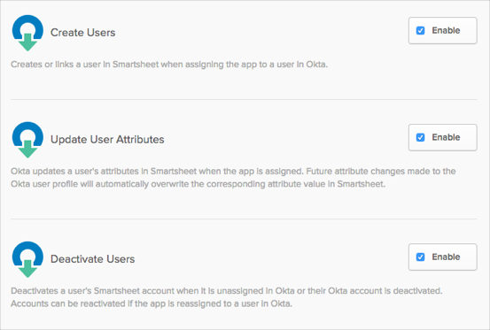

This guide provides the steps required to configure Provisioning for Smartsheet.
If you do not already have one, obtain an API access token as follows:
Go to http://app.smartsheet.com/b/home and login to your Smartsheet account.
Click Account at the top left, then select Personal Settings from the drop down menu.
In the Personal Setting window, select API Access.
Select Generat new access token, then name your token and click OK.

An API access token will be generated for you.
Before you click OK, make sure you make a copy of the generated access token. You will not be able to copy the access token once you click OK.
Configure your Provisioning settings for Smartsheet as follows:
Check the Enable provisioning features box.
In the API Credentials section, enter your API access token into the API Token field:
Optionally you can select the Import active users only checkbox to ensure that no pending or inactive accounts are imported during user import.
Click Test API Credentials to verify the token. You should get a message that says Smartsheet was verified successfully.

Scroll down the Provisioning page and select those provisioning features you want to enable:


Click Save.
You can now assign people to the app (if needed) and finish the application setup.
You must have a Smartsheet account that is authorized as a licensed sheet creator, a resource viewer, a group administrator, and a system administrator – otherwise, your API token will not be valid.
If you receive an error message stating that the operation you are attempting to perform is not supported by your plan, verify that the plan corresponding to your authenticated user is either a Team or Enterprise plan. A basic plan does not support user management.